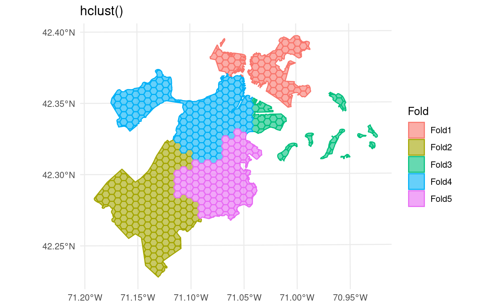

I’m wrapping up three months as an open-source intern with Posit (née RStudio). I wanted to write a small post talking a bit about what it was like and what we got done in that timespan. So, well, this post1.
The Job Itself
Let’s not bury the lede: this internship was an absolute blast.
I could not have asked to work with a better group than the tidymodels team, who are all consistently fantastic people. It’s rare to find a group this consistently brilliant, and more importantly also this consistently friendly, inclusive, and welcoming. Working directly with Hannah Frick and Julia Silge was absolutely incredible; I highly recommend it for anyone if the opportunity comes up.
The internship started off with an in-person work week (at the beautiful Boston office2), and then more or less wrapped up with the last ever3 RStudio::conf() (perhaps the best in-person conference experience I’ve had). This was a fantastic way to structure what was otherwise a fully remote position, and I’m extremely appreciative of getting to work with the team both in-person and remotely over the span of the internship.
It was a great few months, I learned a lot – about programming and design, sure, but also about technical communication, working in the open, interacting with an open source community, and more.
And we did some really cool things! Speaking of which…
The Things We Did
Alright, time for some pretty blatant bragging. Sorry. But we did some really, really cool stuff the past few months.
spatialsample
The main thrust (and originally, the entire scope) of the internship was writing the spatialsample package for spatial cross-validation. While not an entirely new package (the first version hit CRAN in 2021), by the end of June we had added support for:
- sf objects (and more correct distance calculations with geographic coordinates)
- exclusion buffers around assessment folds
- inclusion radii around assessment folds
- spatial clustering with more than just k-means clustering
- spatially buffered V-fold CV
- leave-location-out CV
- spatial block CV
- automatic plotting

autoplot() on a spatial clustering CV object, for the city of Boston.That meant a pretty huge update to the package, and that version was released on CRAN as version 0.2.0. A small patch to speed up buffering, work better with simulated data, and make me the official package maintainer as Julia moves to focus more on ModelOps just hit CRAN last Friday.
I also wrote a package vignette on spatial buffering, and an article for tidymodels.org on how to use spatialsample for multi-scale model assessment.
We chose to not release spatialsample 1.0.0 as part of the broader tidymodels 1.0.0 release because the package is still very young – most of its features have only been on CRAN for a month or so, and we want more feedback on what else the package should do and any areas that people think we got wrong. However, I feel really good about where the package is right now, and am really excited to see people use it (and to use it in my own work going forward).
rsample
After the spatialsample release, I had the opportunity to start poking around the open issues on the rsample package. As rsample is a much more established package, it was important to focus on only the changes we could make without breaking people’s code; with that said, we were able to add a few highly-requested features:
- Improved support for grouped resampling, adding functions for grouped Monte Carlo CV, grouped bootstrap resampling, creating validation sets with groups, and creating initial training/testing splits with groups. This was the most-requested feature still missing from rsample, and it’s a personal point of pride that I was able to implement it (in a way that doesn’t seem awful to maintain).
- Added
reverse_splits()to “swap” the analysis and assessment sets of an rsplit or rset object. - Added
reshuffle_rset()to re-generate an rset, using all the same parameters that were used to create it the first time (but potentially, a different random seed). This was the oldest open issue on rsample, and even though it wasn’t in particularly high demand I was very happy to close both the oldest and most requested issues on the package in a single release. - Standardized the classes and attributes attached to the objects returned by rsample functions.
I also added a new overview vignette covering some of the most commonly used functions in the package, which I think will be a good first point of entry for a lot of users.
All of this hit CRAN as rsample 1.1.0 on Monday. I’m particularly excited for the grouped resampling functions to hit CRAN, since I think those will solve a very common use-case for a lot of people working with repeated measures data.
waywiser
On top of these resampling projects, I’ve also been noodling on a new package in my personal namespace, called waywiser. This is a yardstick extension package4 focused on helping people assess spatial autocorrelation in model residuals.
Version 0.1.0 is inching along to CRAN at the moment, as I clean off a few last new package checks, and should be viewed as mostly experimental – I’m currently figuring out how I can get spatial information from inside of tune::fit_resamples(), and the default neighbor lists and weights matrices will probably be outsourced to sfdep in the next version. But it exists!
And Another Thing
I also did a few other (less RStudio related) things over the past few months:
- Made a Quarto template that imitates the rticles arXiv template.5
- Published “Filtering ground noise from LiDAR returns produces inferior models of forest aboveground biomass in heterogenous landscapes” in GIScience and Remote Sensing6.
- Wrote a book chapter (“AI for Shrubland Identification and Mapping”) based on our shrubland research for a forthcoming book on AI in Earth science. I’ll share more about that when it becomes more public.
- Helped run the virtual side of the ESIP 2022 July Meeting.
- Also, helped organize a session entitled “AI for All People: How to make AI useful for Earth science applications?” at the ESIP July meeting.
- Also also, gave a talk (“Building trust in AI outputs: Approaches from NY’s forest carbon monitoring program”) at that session.
- Published a guest blog, “Building Trust in Machine Learning Outputs”, on the ESIP website.
- Gave a talk “unifir: A unifying API for interacting with Unity from R” at useR! 2022
- Helped write a talk, “Filtering ground noise from LiDAR returns produces inferior models of forest aboveground biomass”, for the 2022 North American Forest Ecology Workshop. The talk was given by my fantastic colleague Lucas Johnson.
It’s been a very fun few months! Here’s to a good back third of the year.
Footnotes
By the way, the title of this post is a joke about a 25 year old horror film: https://en.wikipedia.org/wiki/I_Know_What_You_Did_Last_Summer↩︎
I was in the middle of moving to Boston at this point, and this work week took place towards the end of May. So I did a very funny thing where I drove from Syracuse to Boston, stayed in a beautiful hotel and went to the office every day, then drove back to Syracuse on Sunday… only to drive back to Boston two days later, move into a slightly less beautiful apartment, and never go to the office again.↩︎
I feel the need to clarify this is a joke; next year’s conference will be posit::conf() following the company’s name change. I had been joking that Hadley should kick off the announcement with “I do have some major news to share: this will be the last ever RStudio::conf()”, but that would probably have unleashed a purely irresponsible level of panic on Twitter.↩︎
And “waywiser” is an old name for a surveyor’s wheel, get it?↩︎
Which is not itself actually affiliated with arXiv at all, but rather a modified version of the NeurIPS template published by an individual researcher. This is confusing; I decided that continuing to refer to it as an “arXiv template” was the least confusing option, but maybe the template should actually be called “preprint template” instead. It’s a very nice template, I like it a lot.↩︎
This link doesn’t work at the time of publication, but will eventually point to the article once the online version gets published.↩︎